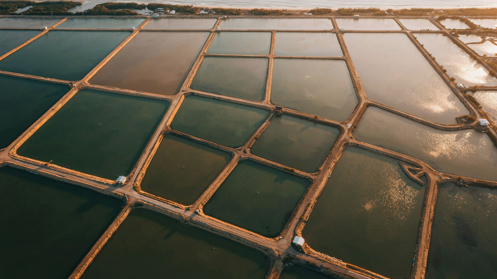

Civil Engineers
Structural design, pond construction planning and infrastructure feasibility aligned with project requirements.
India is the 2nd largest fish producer globally, contributing approximately 8% of global fish production. The government has committed ₹20,050 crore under PMMSY — targeting 22 MMT fish production and 5.5 lakh new jobs.
Know How We Help →We have been working on NFDB-related projects for the past four years, providing project proposals, DPR preparation, technical documentation and handholding support.
We are here to support you in preparing a bankable project proposal under the Fisheries and Aquaculture Infrastructure Development Fund (FIDF). FIDF supports various fisheries infrastructure projects, and the scheme requires a DPR with cost estimates, layout drawings, machinery quotations, land documents and project economics.
Structure the project concept, scope, investment and implementation plan clearly.
Bring technical, financial and operational details together in a bankable DPR.
Organise layouts, estimates, quotations, land documents and project economics.
Support the documentation and follow-up journey from preparation toward submission.
Our approach brings technical planning, aquaculture knowledge, financial analysis and regulatory documentation together so a project can move from feasibility to submission with fewer gaps.

Structural design, pond construction planning and infrastructure feasibility aligned with project requirements.
Species selection, stocking density, feed management, water-quality protocols and production planning.
Cost-benefit analysis, loan structuring, subsidy mapping and ROI projections aligned with funding needs.
Scheme guidelines, fisheries-department requirements and compliance documentation across major aquaculture states.
The consultancy model described in the presentation is designed for different project sizes and stages, from first-time applicants to established enterprises seeking documentation, finance or compliance support.
Support for small and marginal producers exploring scheme-backed projects.
Collective applications and larger-scale project submissions.
Project planning around livelihood and community aquaculture opportunities.
Commercial aquaculture, infrastructure and expansion projects.
Technical, documentation and project-support capabilities for institutional stakeholders.
Access official resources, schemes, subsidies and guidelines from leading Government organizations that support fisheries, aquaculture, agriculture and allied sectors.

Agriculture, rural development & project finance
Official website · nabard.org Visit Official Website ↗
Consultancy & project development
Official website · nabcons.com Visit Official Website ↗
Fisheries policy, schemes & development
Official Department of Fisheries website · dof.gov.in Visit Official Website ↗
Food processing & value addition
Official website · mofpi.gov.in Visit Official Website ↗
Horticulture development & infrastructure
Official website · nhb.gov.in Visit Official Website ↗
Fisheries & aquaculture development
NFDB logo use is subject to prior permission from NFDB. Visit Official Website ↗
Centrally sponsored livestock development scheme
Official Government page · DAHD · National Livestock Mission Visit Official Website ↗
Digital platform for fisheries & aquaculture stakeholders
Official Department of Fisheries portal · nfdp.dof.gov.in Visit Official Website ↗